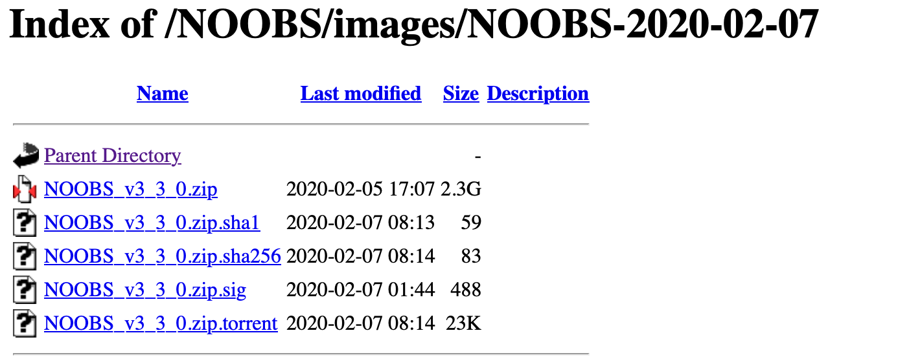

Chapter 2 Rasbian OS (32bit) setup
64bitOSではAudio Adapterがうまく動作しないので、作成したincoming_record.pyを動作させるため、デバック完了するまで暫定処置として RasbianOSの32bit版を使用する。
RasbianOSの32bit版はRaspberry PI Imagerで対応していないのでNOOBSを使用してインストールする
2.1 NOOBS
RasbianOSの保存場所
/NOOBS/images/NOOBS-2020-02-07を選択する、他のカーネルが必要な場合はzipファイルにあるrelease_notes.txtからカーネルバージョンを調べてNOOBSのバージョンを選ぶ

zipファイルのみをダウンロードしてSDカードにコピー、電源を入れてHDMIを接続すればインストール選択画面が表示される。指示に従ってインストールを実行する
2.2 基本設定
HDMIにモニターを接続して、マウスとキーボードを設定後
SSHの設定
パスワード
WiFiの設定
タイムゾーン
sudo timedatectl set-timezone Asia/Tokyoホスト側SSHキー再設定を必要に応じて行う
ssh-keygen -R 192.168.3.4 #ipアドレスはifconfigで確認する2.3 ファームウェアの確認
pi@raspberrypi:~ $ uname -a
Linux raspberrypi 4.19.97-v7l+ #1294 SMP Thu Jan 30 13:21:14 GMT 2020 armv7l GNU/Linux2.4 システムの更新
sudo apt -y update
sudo apt -yV upgrade
sudo apt -yV autoremove
sudo apt autoclean必要なライブラリを導入
sudo apt install -y android-tools-adb android-tools-fastboot
sudo apt install -y audacity
sudo apt install -y libportaudio2 libportaudiocpp0 portaudio19-dev 2.6 USB Audio Adapterの動作確認
Device情報を確認する
aplay -l
**** ハードウェアデバイス PLAYBACK のリスト ****
カード 0: ALSA [bcm2835 ALSA], デバイス 0: bcm2835 ALSA [bcm2835 ALSA]
サブデバイス: 7/7
サブデバイス #0: subdevice #0
サブデバイス #1: subdevice #1
サブデバイス #2: subdevice #2
サブデバイス #3: subdevice #3
サブデバイス #4: subdevice #4
サブデバイス #5: subdevice #5
サブデバイス #6: subdevice #6
カード 0: ALSA [bcm2835 ALSA], デバイス 1: bcm2835 IEC958/HDMI [bcm2835 IEC958/HDMI]
サブデバイス: 1/1
サブデバイス #0: subdevice #0
カード 0: ALSA [bcm2835 ALSA], デバイス 2: bcm2835 IEC958/HDMI1 [bcm2835 IEC958/HDMI1]
サブデバイス: 1/1
サブデバイス #0: subdevice #0
カード 1: Device [Plugable USB Audio Device], デバイス 0: USB Audio [USB Audio]
サブデバイス: 1/1
サブデバイス #0: subdevice #02.7 Python
Pythonのバージョン確認
pi@raspberrypi:~ $ python3 -V
Python 3.7.3Pythonライブラリを導入
pip3 install pyaudio
pip3 list | egrep "numpy|Audio"
numpy 1.16.2
PyAudio 0.2.142.8 SDカードのバックアップ作成
作成したカスタムイメージのバックアップ作成はMacから行う、SDカードのマウント先が異なる場合があるかもしれない。以下はSDカードのマウント先は/dev/disk4にある想定
作業ディレクトリへ移動
cd /tmpイメージの吸い出し
sudo dd if=/dev/rdisk4 of=raspberry-backup.img bs=1mSDカードの入れ替え
diskutil unmountDisk /dev/disk4イメージを新しいSDカードへコピー
sudo dd if=./raspberry-backup.img of=/dev/rdisk4 bs=1m